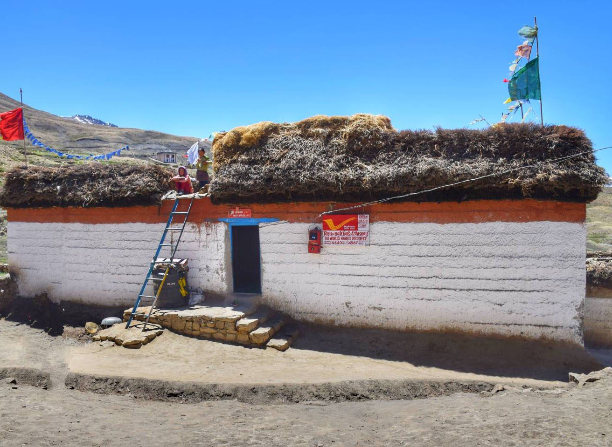

Hikkim Post Office
हिक्किम डाकघर


Hikkim derives its identity not from a founding legend in the usual sense but from an administrative milestone: a single-room post office opened in November 1983 to extend India's postal network into one of the Himalayas' most inaccessible inhabited pockets. The village itself, a cluster of stone-and-mud houses in the cold desert terrain of the Spiti Valley, had until then relied on word of mouth and the occasional traveller to stay connected with the world beyond the mountains. The post office's establishment was less a dramatic event than a quiet bureaucratic decision by India Post to place a branch wherever people lived, however remote, and that decision is what later gave Hikkim its unusual claim to global attention.
What sets Hikkim apart is its altitude: the post office sits at roughly 4,400 to 4,724 metres (about 14,400 to 15,500 feet) above sea level, a figure that has earned it recognition, including by Guinness World Records, as the highest post office in the world. Administratively it functions as a branch office under the Kaza sub-division of the Lahaul and Spiti postal division, carrying the PIN code 172114, and it serves not only Hikkim but neighbouring hamlets such as Langza, Komic, and Demul. Its significance is less economic than symbolic and logistical, standing as proof that India's postal infrastructure, one of the largest in the world by number of offices, reaches communities that few other state institutions do.
The post office has been run since its inception by postmaster Rinchen Chhering, reportedly selected for the job at age twenty-two in part because he owned a bicycle and could travel the difficult terrain quickly. Housed in a modest single-room structure, the office handles a small but steady volume of correspondence, typically between fifteen and twenty letters a day, and doubles as a savings bank where around fifty local residents maintain deposit accounts, a function that matters in a region with no formal banking presence. Outgoing mail is physically carried on foot or by vehicle down to Kaza, the sub-divisional headquarters, before entering the wider postal network, a journey that can take hours depending on road and weather conditions.
A defining feature of daily operations at Hikkim is its seasonal closure: for nearly half the year, heavy snowfall cuts the village off from motorable roads, suspending regular postal runs and underscoring just how fragile the connection to the outside world remains despite the office's fame. This isolation has, paradoxically, become part of its appeal. Tourists travelling through Spiti Valley routinely stop at Hikkim specifically to buy a postcard and have it stamped with the office's distinctive high-altitude cancellation mark, a small ritual that has turned a working rural post office into a minor pilgrimage site for travellers, backpackers, and philatelists seeking an unusual postmark in their collection.
Hikkim's fame has also drawn public figures and media attention, with visitors ranging from ordinary trekkers to Bollywood celebrities having sent postcards from the office to mark their journeys through the valley, and the village additionally holds a record for having the world's highest polling station, noted in the Limca Book of Records. The office continues to operate as an ordinary branch of India Post, administered through the Kaza office under Himachal Pradesh circle, with Chhering or his successors handling both mail and the small savings ledger much as they have since 1983. It remains, in practical terms, a working rural post office first and a record-holder second, its daily fifteen-to-twenty letters processed by hand in the same single room that travellers now queue outside for a chance at that high-altitude stamp.
| Date of Introduction | March 22, 2022 |
|---|---|
| Address | Branch Postmaster, |
| Hikkim BO, | |
| Lahaul and Spiti (dt.), Himachal Pradesh - 172114. |